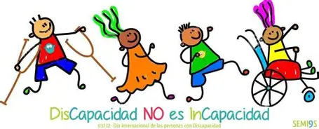

Bienvenidos
Este sitio web presenta nuestro proyecto dedicado a compartir las historias y biografías de personas con discapacidades y de quienes las acompañan. Buscamos inspirar, visibilizar y reconocer sus experiencias de vida.
A través de este espacio conocerás el propósito del proyecto, su equipo creador, y las voces de quienes han compartido sus testimonios con nosotros.